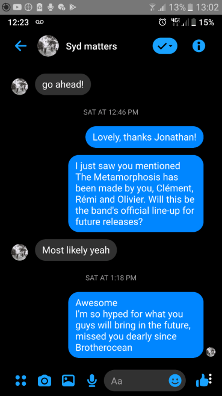

Syd Matters songs uploaded to fan youtube account
posted: 7th of July, 2020
A bit of a smaller announcement, theres a Syd Matters fan account now. Three songs, Contre Soi, Everything At Once, and Frère d'âme have been uploaded to the account.
New B-side material officially released
posted: 5th of July, 2020
Jonathan Morali opened a new youtube account about a week ago where he has released two unreleased outtakes from the Brotherocean recording sessions along with some Life is Strange soundtracks. Childrnnn, a longer, more fleshed out version of "Like Heart" (from La Question Humaine), and Wolfmother (Unfinished Rhapsody), which is, as you might have guessed, an unfinished, longer version of Wolfmother.
The Metamorphosis postponed
posted: 2nd of July, 2020
On March 13th, Jonathan stated that their March 25th show of their new project The Metamorphosis would be postponed due to the COVID pandemic. He also mentioned that the project is a full band work, and that the band is back (minus bassist).
